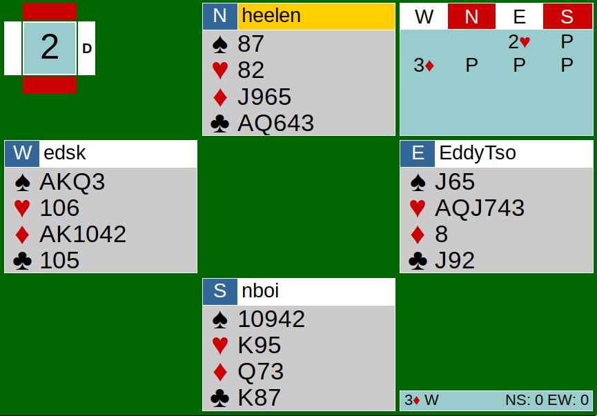
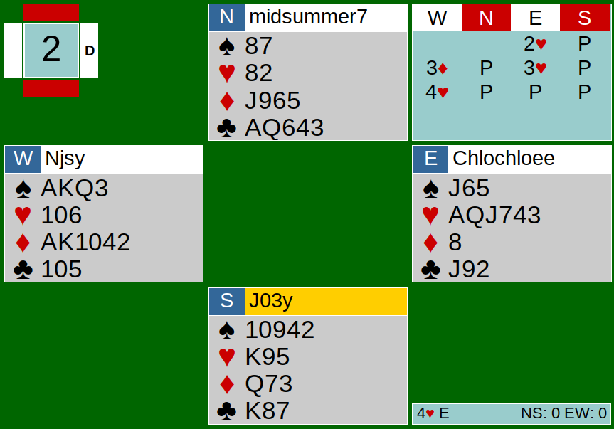
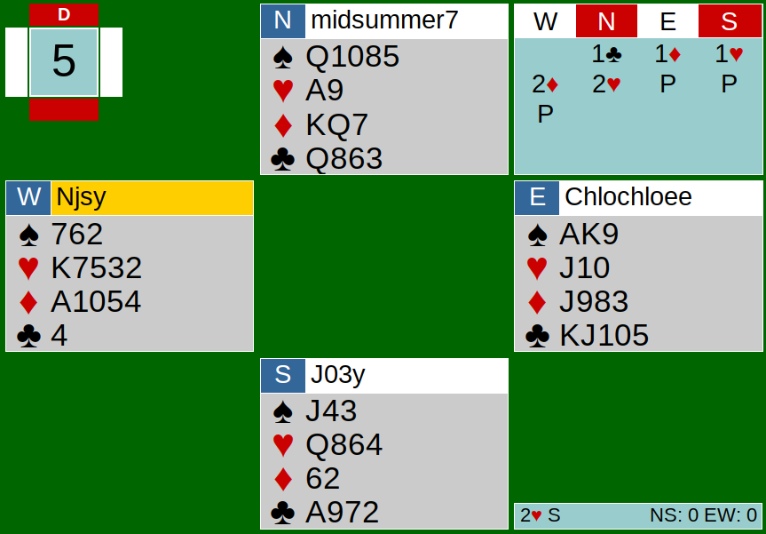
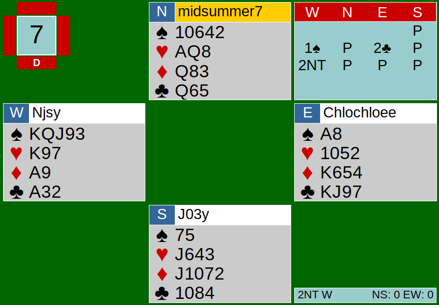

In today’s write-up, we are going to review a few guidelines that are crucial to play by. To start off, let’s take a look at one auction from a hand in CK’s team game on June 16th.
New suits by responders are 100% forcing.

The bidding starts off with a preempt of 2H by East. West responds with 3D on the three-level. This bid is 100% forcing for one round, because new suits by responder are forcing. East should not have passed here. Passing the contract in 3D resulted in failure to play in a heart contract with their solid 8 card fit and in a negative EW score of 50 points (down 1), when the other table’s EW pair made 4H (+420). Their bidding is a good example of how the auction should have went:

After the 3D response, East rebid her heart suit. In this case, because East preempted and may not have another suit to show, rebidding hearts does not guarantee 7 hearts. Hearts were rebid because that was the only suit to East’s hand, and East could not pass West’s new suit response. Keep in mind that had West just raised to 3H instead of the diamond response, that would not be forcing because it is not a new suit.
Support with firm support.
Let’s also take a look at another auction.

North starts the bidding off with 1C and East overcalls 1D. South responds 1H, showing 4 or more hearts and less than 4 spades. Side note: If South wanted to show 4-4 in the majors, South can make a negative double. Without the negative double, it shows 4+ hearts. West supports East’s diamonds by bidding 2D, and North responds to partner’s 1H bid with 2H with only two hearts. North should not have bid 2H because North does not have enough support for partner. Partner may only hold 4 hearts; you may not assume that partner has more than that. Only support your partner when you are certain together you have a strong fit in the suit. This 2H bid led NS to be down 1, 100 points to EW.
2/1 review

In this board, the auction began with a 1S opening by West, showing at least 5 spades and an opening hand. East makes a 2/1 response of 2C.
As a refresher, 2/1 is a system that forces a pair to bid to game when responder makes a bid on the 2-level that is below the opener’s suit. 2/1 bidding sequences look like: (opener/responder)
1D/2C 1H/2C 1H/2D 1S/2C 1S/2D 1S/2H
When either one of these 6 patterns are bid, neither player can pass until a game contract is reached. You must also have an opening hand to be able to bid 2/1 auctions. It is important to note that responder must not have passed before bidding 2/1 and there is no interference (no bids or doubles by the opponents) for the responding bid to be a 2/1 bid.
Here, bidding a game-forcing bid is a bit borderline. East only holds 11 weak points with a very flat hand. I feel like East should have just bid 1NT semi-forcing, showing 6-12 HCP. The bidding continued on after the 2C bid with West bidding 2NT. East should still realize she has made a game-forcing bid, and must bid until the pair reaches game, so she must not pass 2NT. Because EW did not go to game, they only received +210 for making 2NT+3 versus a +660 score for making 3NT+2. It is vital to recognize 2/1 bids so game bonuses can be rewarded for making the contract.